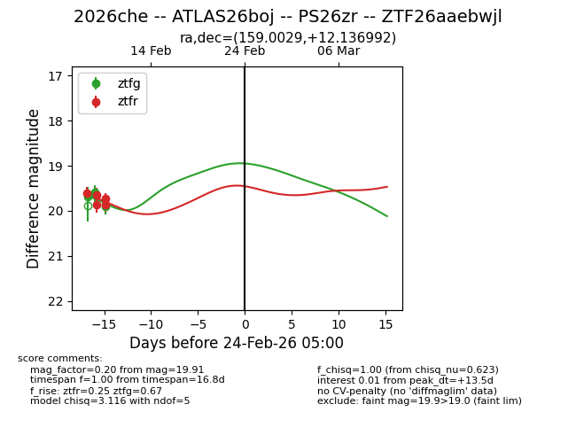
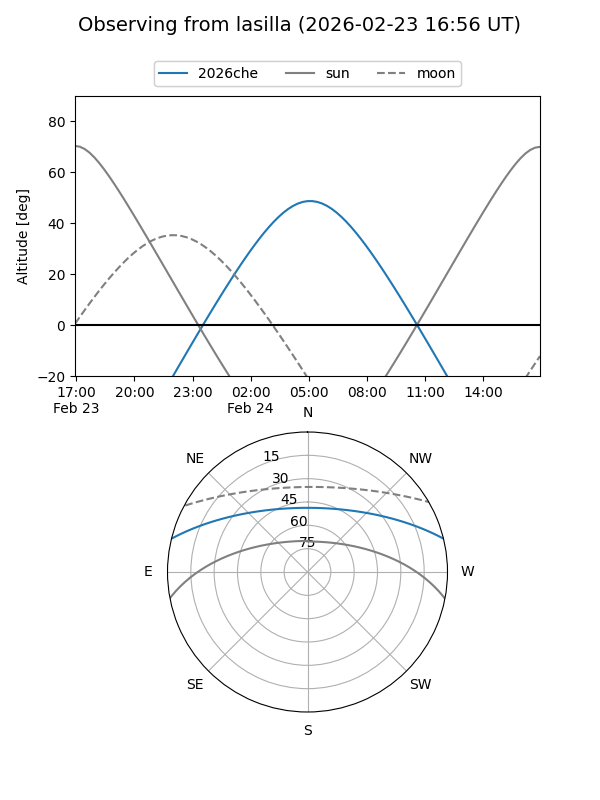
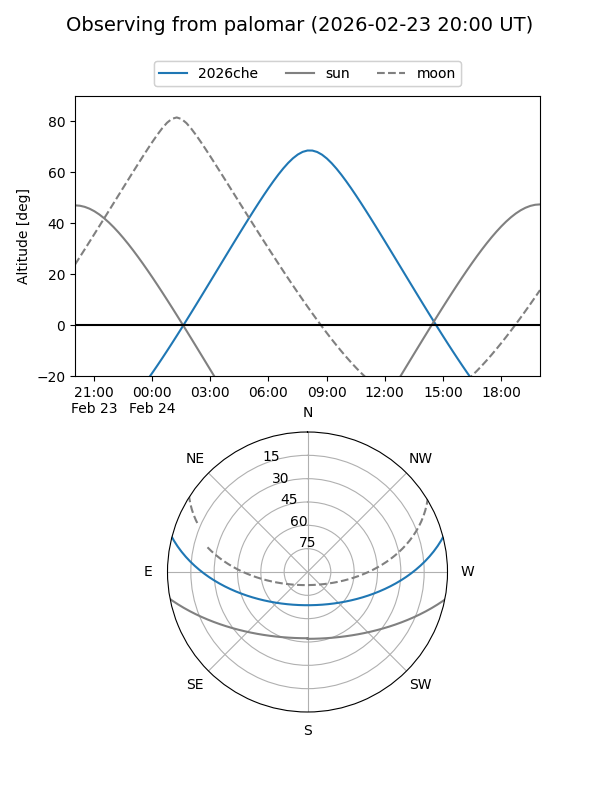

2026che
Target 2026che at 2026-02-24 09:08
Aliases and brokers:
FINK: link
Lasair: link
ALeRCE: link
TNS: link
YSE: link
alt names
ZTF26aaebwjl (ztf,fink_ztf)
2026che (tns,yse)
ATLAS26boj (atlas)
PS26zr (panstarrs)
Coordinates:
equatorial (ra, dec) = 159.0029,+12.13699
equatorial (HMS+DMS) = 10:36:00.70,+12:08:13.17
galactic (l, b) = (231.5113,+54.92770)
Flags:
Photometry:
last ztfg=19.91, ztfr=19.87
4 ztfg, 5 ztfr detections
Lightcurve

Visibility


Additional plots